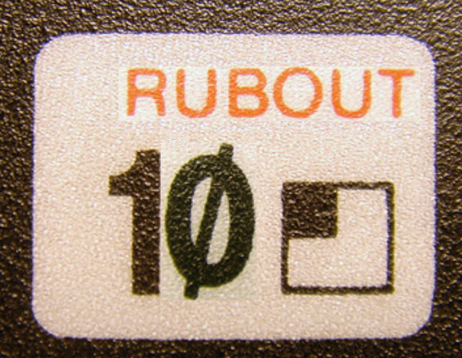

My Portfolio

Below are some of the key projects I worked on from each lesson of this course:
1 - Intro to HTML & Semantic Elements. I took a stab at making my first html document and experimented with semantic elements.

Project 2 - Even More HTML. My next project is...well, you're looking at it--I set up this portfolio webpage 🙃.

Project 3 - Intro to CSS. I started experimenting with CSS using what I learned in this class, plus so fun tips and tricks I found online.

Project 4 - Kitties to Go Mockup. For this assignment, I made a mockup website about a ficitonal cat business, matching the html & css with the instructor-provided examples as much as possible.

Project 5 - Flexbox & Fonts. I updated my external style sheet with some fancy new code, experimented with external text libraries and flexbox.

Project 6 - Transitions. I once again updated my external style sheet, this time with some transitions and an n-th child selector.

Project 7 - Website Architecture. I created a mockup site for a fictional client's business. It will by styled and refined in the next project.

Project 8 - Multimedia & Grids. The link to the mockup site above is now styled properly thanks to this css repository I made for it. I tinkered with adding grids and multimedia.

Project 9 - Web Forms. Developing Web Forms.

Project 10 - DOM & Accessibility. Learned about the "Document Object Model" and designing sites with accessibility in mind. I revisted some of my previous mock sites and made them more accessible, particularly for those with visual impairments.
